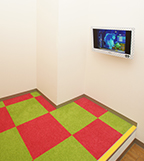

体の健康は「人間ドック」ですが、お口の健康は「歯科ドック」で、しっかり見守りましょう！当院では、お口の総合検査として、歯科ドックを行っております。少しでも口腔内に痛みや違和感などがある方、自分のお口の状態をしっかり
チェックしておきたい方は、ぜひ一度受診してください。
「歯科ドックとは？」
歯や歯ぐきの状態についてチェックをしたり、レントゲン撮影によって口腔内の異常を調べたりするのが「歯科ドッグ」の役割です。虫歯による痛みや、歯周病からくる歯ぐきの腫れは比較的わかりやすいもの。しかし、歯と歯の間にできたごくわずかな虫歯や初期段階の歯周病、粘膜や舌にできた異物などは、精密な検査でなくては詳細まで把握することができません。こうしたちょっとした変化を発見し、重大な問題を招く前に正しい処置・治療を行うことで、負担をかけずに口腔内を健康なまま維持することができます。


-
歯科ドックにより早期発見できた疾患、およびその可能性となる原因を発見した場合には、日常生活で気をつけることや治療方法などをご提案させていただきます。
まずは食生活アンケートによって、ご自身の口腔内やお体の健康状態を把握し、万病を未然に防げるように健康管理について歯科医師・歯科衛生士よりアドバイスをさせていただきます！
-
虫歯のリスクや歯周病のリスクは、専用の検査キットを用いて分析し、皆様にもわかりやすくご説明させていただきます！

-
患者様のライフスタイルによって、お口の問題点はそれぞれ違います。検査後は、「これからの歯科医院とのかかわり方」、「口腔ケアの仕方」、「日々の食生活の提案」まであら
ゆる角度から、一人ひとりに適したご提案をさせていただきます。
- 唾液の量を計り、
お口の自浄能力がわかる - 虫歯を作るきっかけとなる
細菌を調べる - 虫歯や歯周病の
予防につながる

-

初めてご来院いただいた患者様には、治療前にご希望をお聞きします。お困りの点や気になっている点についてはコーディネーターがお伺いしますので、些細なことでもお気軽にご相談ください。
-

歯科ドック検査をご希望で来院されました患者様に対して、歯科ドックを実施いたします。当院では最新の歯科治療機器を用いて、虫歯、歯周病、唾液、細菌検査を行います。
-
歯科ドック検査の結果をご報告させていただきます。検査の費用については丁寧にご説明をさせていただきます。患者様も自身のお口の中がどのように状態になっているのかを把握することができます。
-
歯科ドックの結果から、これからの治療方針を立てていきます。検査結果をもとに、患者様の将来的なお口の状況を考え、最善の提案をさせていただきます。 また歯のかぶせ物や、詰め物、入れ歯についてもご希望をお伺いしながら進めてまいります。
-

治療終了時に、治療に対してご満足いただけたかをお聞きし、また今後お口の状態をきれいに保つために必要な、メンテナンスについてのご説明をさせていただきます。
ひやま歯科クリニックの院長、檜山雄彦と申します。私は歯科大学卒業後、母校の成長発達歯科学教室小児歯科分野に10年間在籍し、在籍中は講師として臨床並びに歯科大学生の教育に携わってまいりました。
そして現在、生まれも育ちも川崎の私は地域密着の歯科医院を目指し、スタッフとともに皆様の歯の健康をサポートさせて頂いております。
お一人お一人とのコミュニケーションを大切にし、
丁寧な説明と治療を心がけています。そして、患者
様の笑顔づくりのお手伝いをさせて頂きたいと思います。分からないことやご不安な点などお気軽にご相談ください。
院長 檜山雄彦
- 
- 所在地
- 神奈川県川崎市川崎区昭和2-9-7 フォルゴーレ川崎
- 院長名
- 檜山雄彦
- 電話番号
- 044-299-2330
- 診療時間
- 9:30～13:00 14:30～19:00
※土曜日は午前の部のみの診療 - 受付時間
- 9:30～12:00 14:30～18:00
- 休診日
- 日曜･祝祭日